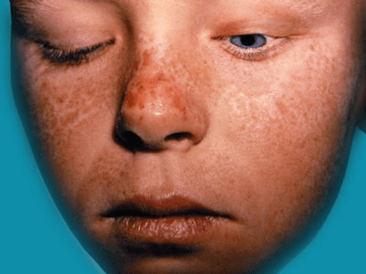

The word ‘erythropoietic’ means associated with red blood cells (‘erythro-’) and their formation (‘-poietic’). The porphyrias are a group of uncommon diseases caused by something going wrong with the production of chemicals known as porphyrins. These chemicals are the building blocks of haem, which, when combined with a protein (globin), forms haemoglobin, the material in red blood cells that carries oxygen round the body. In the case of EPP, there is a build up of one of these porphyrins (protoporphyrin) in the blood, especially in the red blood cells. This leads to a sensitivity to sunlight.

At present there is no cure for EPP.
It is sensible to avoid unnecessary exposure to sunlight. Other helpful measures include the wearing of protective clothing and the use of sunscreens: